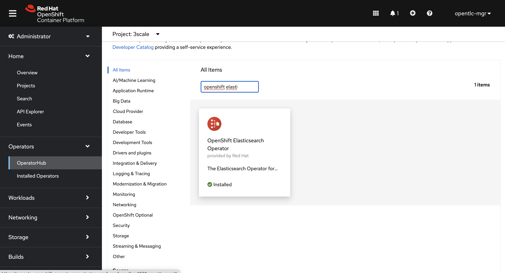
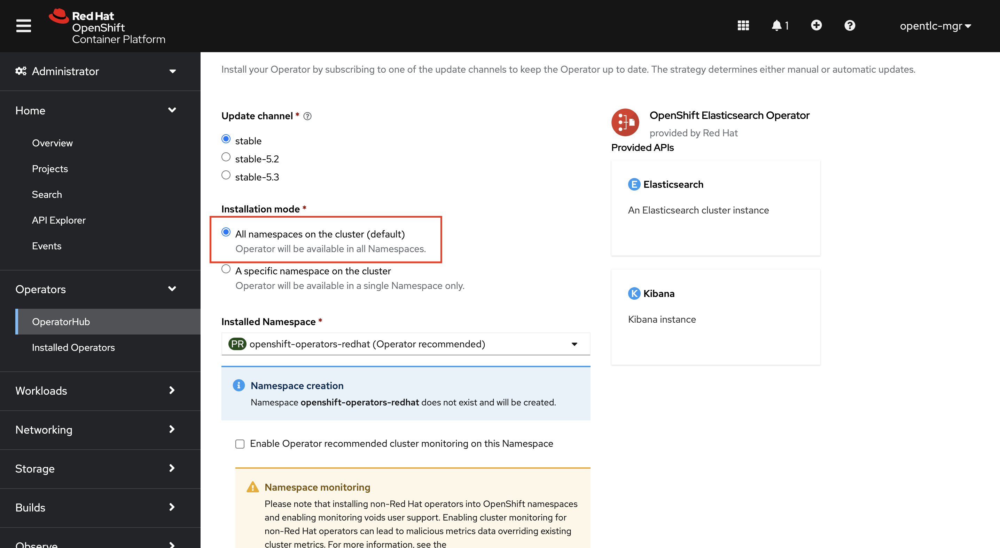
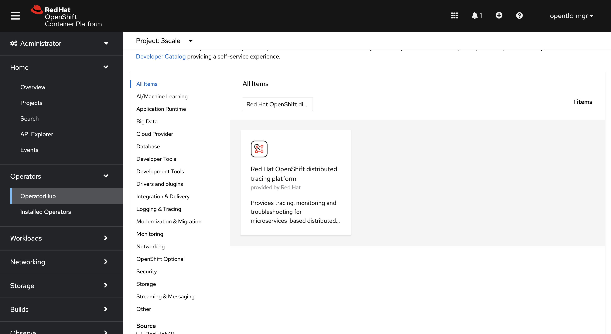
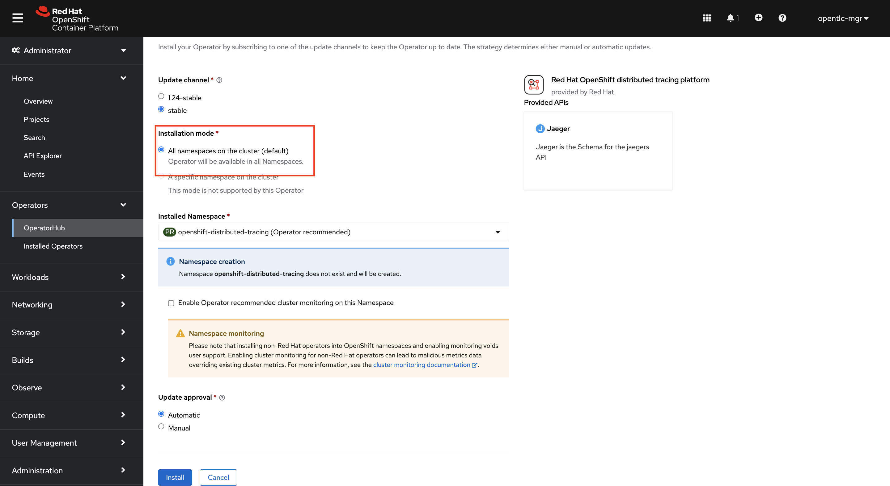
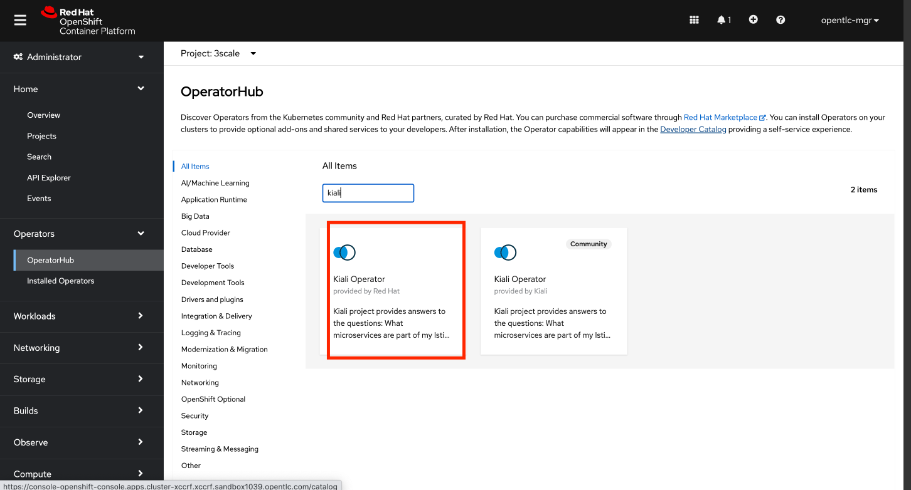
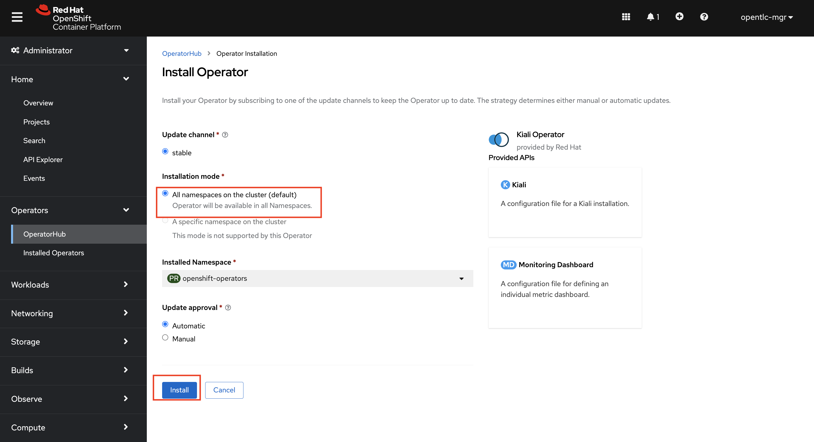
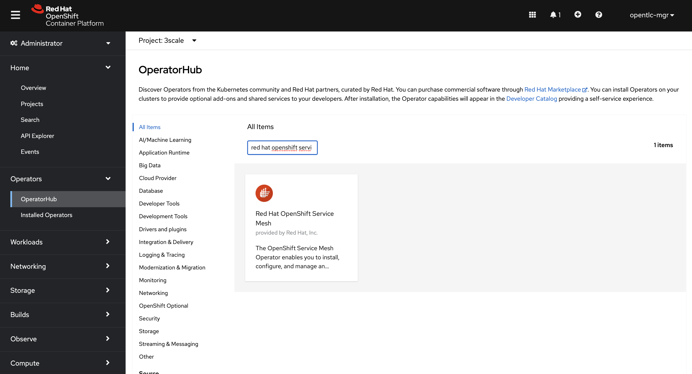
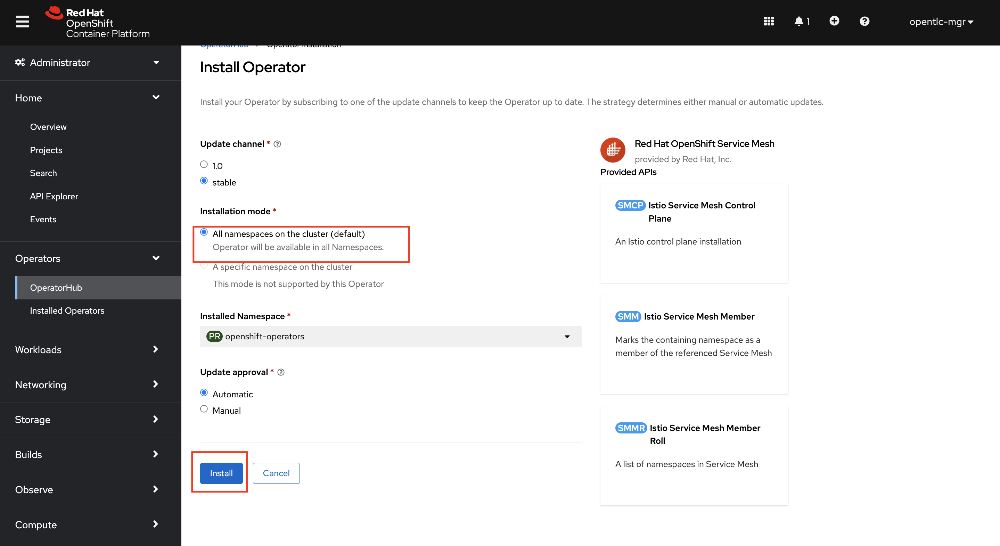
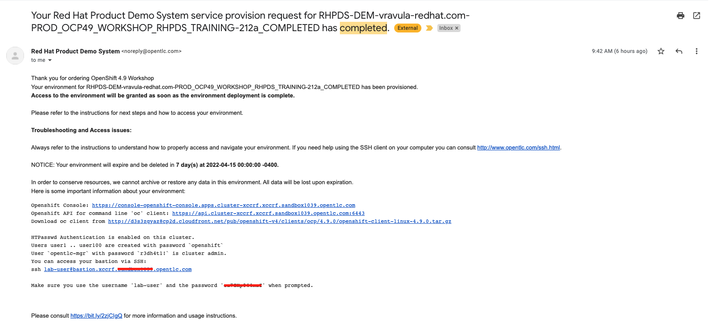

Service Mesh Setup
Service Mesh Control Plane Overview
We will be installing Elasticsearch, Jaeger, and Kiali for tracing and monitoring purposes. These are not mandatory for a general service mesh installation but are helpful in tracing the route of the calls, monitoring the mesh etc.
Elastic Search Operator Installation
-
On your OpenShift Console UI, navigate to Administrator > Operators > OperatorHub and search for OpenShift Elastic Operator. Select the Operator and Click Install.
 -
Leave all the values as Default and click on install. Double check if the 'All namespaces' radio button is checked.

Jaeger Operator Installation
-
Repeat the process for Jaeger Operator. On your OpenShift Console UI, navigate to Administrator > Operators > OperatorHub and search for Red Hat OpenShift distributed tracing platform. Select the Operator and Click Install
 -
Leave all the values as Default and click on install. Double check if the 'All namespaces' radio button is checked.

Kiali Operator Installation
-
Repeat the process for Kiali Operator. On your OpenShift Console UI, navigate to Administrator > Operators > OperatorHub and search for Kiali. Select the Kiali Operator by Red Hat and Click Install
 -
Leave all the values as Default and click on install. Double check if the 'All namespaces' radio button is checked.

OpenShift Service Mesh Operator Installation
-
Repeat the process for Service Mesh Operator. On your OpenShift Console UI, navigate to Administrator > Operators > OperatorHub and search for Red Hat OpenShift Service Mesh. Select the Operator and Click Install
 -
Leave all the values as Default and click on install. Double check if the 'All namespaces' radio button is checked. Wait for the operator installation to complete

After all you have installed all four Operators, click Operators → Installed Operators to verify that your Operators installed
Create Control Plane
The control plane manages and configures the proxies that make up the data plane. It is the authoritative source for configuration, manages access control and usage policies, and collects metrics from the proxies in the service mesh. You can deploy a basic ServiceMeshControlPlane by using the web console or CLI. We will be using the CLI for our demo.
-
Open the terminal on your workstation. SSH into the cluster bastion via the credentials you obtained in your welcome email which should look like the images below
 -
Create new project with the name 'istio-system'
oc new-project istio-system -
Create a Custom Resource Definition file for the Control Plane with name 'ServiceMeshControlPlane_basic.yaml' using vim or any other editor on the cli. Copy paste the below yaml into the file and save it.
apiVersion: maistra.io/v2 kind: ServiceMeshControlPlane metadata: name: basic spec: addons: grafana: enabled: true jaeger: install: storage: type: Memory kiali: enabled: true prometheus: enabled: true policy: type: Istiod profiles: - default telemetry: type: Istiod tracing: sampling: 10000 type: Jaeger version: v2.1 -
Apply the CRD to your cluster using the below command
oc apply -f ServiceMeshControlPlane_basic.yaml -n istio-system
After completion please proceed to next section: Provision the BookInfo Application